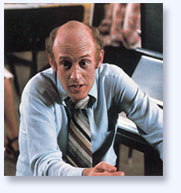

|
All lectures are
interwoven with the performance of music
We are living at a crucial and very dangerous time, unprecedented
in human history. The Earth has not undergone anything comparable
to the order of devastation and destruction witnessed today;
mass extinctions, biospheric toxicity, exploitive depletion
of natural resources all in the name of a “progress”
no longer commensurate with planetary survival. We face worldwide
starvation, disease, war, terrorism; our families disintegrate,
our children struggle with violence and self- destructive
lifestyles. These emergencies call for nothing less than a
planetary transformation in consciousness – the greatest
in human history.
In
this presentation, Lorin Hollander investigates the burning
question of how we might ground human existence in harmony
with the rhythms of life. Through music and an entirely different
order of communication Mr. Hollander takes the audience beyond
the cognitive and the experiential into the realm of visionary
creativity where lost secrets surface and untapped gifts ignite
in new inspiration. Music touches the fundamental and universal
aspects of our souls and therefore has an unmatched power
to nurture and guide the creative inspiration we need to assure
our survival as planetary beings. Furthermore, music mirrors
the waves and vibrations underlying the most fundamental causative
principles found in nature - the very life forms we are struggling
to save. Indeed, as a reflection of nature’s vibratory
patterns, music provides the blueprint for planetary revival
and spiritual revelation.
Mr. Hollander addresses the need to awaken abilities which
are not yet taught, not yet named let alone accomplished –
capacities to re-imagine a world where we live in harmonious
being with ourselves, others, and the universe. It is thus
that the world currently hurtling towards social and ecological
ruin can be renewed. Business organizations must embrace and
universities must prepare innovators able to communicate their
visions in ways which will awaken those enabling and endorsing
non-sustainable modes of being. This presentation provides
a powerful access for the audience to discover how this inevitable
shift in priorities offers as well our greatest (and perhaps
only) opportunity for economic growth and development in all
human enterprise.
Suggested audiences: All
– Corporate, Basic Education, University, Environmental,
etc.
The universe is shaped the way it would sound. This presentation
focuses on an exploration of Sacred Geometry, Fibonacci ratios
and the Laws of Harmonics, beautifully illuminated and made
clear with the performance of music. Hollander shows the audience
how music mirrors the waves and vibrations underlying the
most fundamental causative principles found in nature - the
very life forms we are struggling to save. Vibrations cause
and are the reason for the Fibonacci ratios – shapes
we find in parts of our bodies, in seashells, galaxies, crystals,
sunflowers, orbits, eggs, buds, pines cones and in the unfolding
of embryonic life. Furthermore, the blueprints for planetary
revival – the vibratory patterns underlying the process
of transformation itself, can be understood through an exploration
of music. Music touches the fundamental and universal aspects
of our souls and therefore has an unmatched power to nurture
and guide the creative inspiration we need to assure our survival
as planetary beings. Through music and an entirely different
order of communication Mr. Hollander takes the audience beyond
the cognitive and the experiential into the fundamental realms
of human consciousness wherein creative visions and prophetic
intuition can be harnessed to guide planetary transformation.
Suggested audiences: Particularly
relevant to environmentalism, deep ecology, spiritual ecology,
biology, science, as well as the arts, personal growth, spiritual
consciousness, etc.
There is little in human existence more relevant to our lives
than the experience of death and dying. Yet until recently
western civilization has denied, repressed or shown lack of
interest in the subject. Is death the absolute end of everything?
Or, as told to us in the great mystical traditions, is it
a great adventure and liberation? What is the experience of
dying itself? What does it feel like? Need we be terrified?
Is reincarnation real? There are thousands of children worldwide
who remember intimate details of a previous life, memories
which have been scrupulously studied and verified. There are
also hundreds of documented Near Death and Out of Body Experiences.
Ancient revered Books of the Dead are united with groundbreaking
consciousness research in illuminating extraordinary realms
of consciousness experienced when dying. In this presentation
Hollander, who has participated in this consciousness research
for more than a generation, will weave music and poetry into
a survey of the entire landscape. Knowing the very real possibility
that our dying can be an awesome adventure and time for liberation,
can utterly transform the way we live our lives.
This lecture with music investigates the fears and concerns
we have about winning the approval of our supervisors and
bosses – the authority figures – and examines
how this stifles the creativity, freedom and self-expression
of those working within corporate and business environments.
Exploring what happens in stage fright is a perfect vehicle
for understanding the experience of “life-fright”
– the fear of being criticized or judged, whether speaking
in public, expressing creative ideas, asking for a raise,
or facing our boards or the media. Mr. Hollander guides the
audience through an experiential process of distinguishing
in ourselves the true nature of what we believe is a critical
“other.” He illuminates the dynamics at the root
of this illusion and provides access to a breakthrough in
creative self-expression.
Using the symphony orchestra as a metaphor
for the business organization, Mr. Hollander demonstrates
a new model for leadership. The audience in this presentation
palpably feels this model of leadership when Hollander conducts
a professional chamber orchestra on stage to demonstrate the
differences in the energy and atmosphere of the group when
he is inspiring rather than controlling, committed to creative
collaboration rather than competition – to serving a
higher purpose. The meeting’s host joins Mr. Hollander
in conducting the orchestra (optional) and feels what it is
like to lead an ensemble in an environment which fosters creative
innovation. As a model of visionary leadership, the symphony
conductor maintains the vision, empowers full self-expression
in each musician, and initiates an authentic ownership of
his/her creative contribution to the orchestra. (This
can also be an experiential workshop without a chamber orchestra.)
Just as many of the great creative geniuses were tormented
people, many highly gifted individuals today suffer with the
same unbearable turmoil; it is an inevitable component of
their very giftedness. (One in seven commits suicide, two
in seven try.) Joseph Campbell discovered that the experiences
of the personality disintegration and reintegration (what
we call, but perhaps can no longer, manic-depression) of these
spiritually and psychologically different people are identical
to the “hero’s journey” – the departure,
initiation and return – as found in the world’s
great mythologies. The great creators left evidence, personal
chronicles of their mythological journeys expressed in their
works of art. In addition to having been an infant child prodigy
who composed music at age three and performed Bach’s
Well Tempered Clavier at
five, Lorin Hollander brings 35 years of exploring the inner
world of highly gifted with an international community. Performing
Mussorgsky’s Pictures at
an Exhibition allows the audience to experience a felt-sense,
to live through the emotional and spiritual impact of a “hero’s
journey.” This presentation illuminates new ways for
understanding works of great art as well as the lives of highly
gifted people. It also provides insight into training mentors,
counselors and guides for these often tormented and misunderstood
souls.
Suggested audiences: Education
of the gifted, spiritual psychology, religious studies, mental
health, wellness and healthcare professions, etc.
Our young people desperately need rites of passage in their
lives, experiences guided by elders wherein initiates undergo
what will allow them to reclaim not-yet-recognized aspects
of themselves. This is a tragically missing stage of development
in our society undermining a discovery of our projection of
fear and hatred, which is played out in the many dysfunctions
we are facing – from drugs to gang violence, teen pregnancy
to suicide. By gaining clarity through a rite of passage,
young people ritually enter the world of the grown-up and
no longer take revenge on projected parts of themselves they
do not know. Through rites of passage we ignite forgiveness
of what we hate “out there” and learn to love
what we didn’t know was really “in here.”
Music is the most powerful force we know to prepare compassionate
leaders, nurture empathic families and inspire responsible
citizens of the world.
Suggested audiences: Education,
youth, parents, teachers, etc.
An ever-increasing portion of our population is becoming
seniors and they also need a rite-of-passage of their own.
They are at a time of their lives where many yearn for inspiring
new creative endeavors. We are not prepared as a society to
empower their capacities and fulfill their dreams. We must
assure that our seniors take their rightful place as true
elders; becoming authentic leaders and mentors to the younger
generations wherein they are honored and sought after for
their wisdom and compassion. Music is the most powerful force
we know to rekindle creative inspiration and empower visionary
leadership.
For
inquiries and booking information, please contact:
Tara
Hollander
207.567.3219 |
|
Additional Lecture
Topics
As a board member of Oliver Sack’s Institute for Music
and Neurologic Function and having pioneered in the fields
of music therapy, Lorin Hollander will clarify why and how
music heals.
|